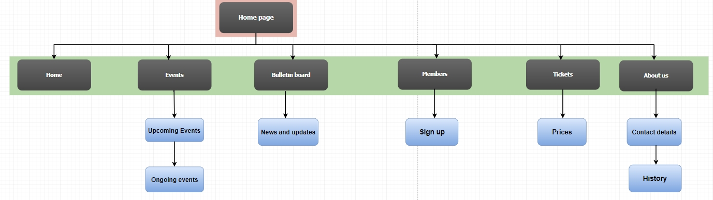

Members:Vamsi Krishna VADDEMPUDI (jc458312), Jaydeepkumar Niteshkumar Patel(jc468451)
The mission for this website is to make it pleasing, easily accessible, and functionally friendly website. The website redesign is intended to get more non-members and registered users to become members and getting the members more engaged for administration roles, organising and promoting concerts and workshops.
The client has 2 differnet parts to evaluate the success of the website: Membership and Concert and artist-based.
Firstly,Memerbship of the organization, the client wishes the website to assist with recruitment as well as community engagement including getting people to volunteer, promotion and orgazation of concerts, administration work and getting involved in workshops.
Finally, concert and artist based success. The client wishes to see a boost in ticket sales to events, expecially to the general public. They also want to attract more artists to oganise concerts with them, as well as cooperate with promotion, photoshoots, media opportunites and other things to help boost theirs and the centres image.
Though the client specializes in diversity and those who love a wide range of music as well as family friendly, as a development team we are aiming this website at locals who love local music and want to know what is going on in the organization. A community engagemnt focus will be prevalent in the website. However, as we recognise that everyone has diverse taste in music, we have added a genre database if the person is after a particular style.
